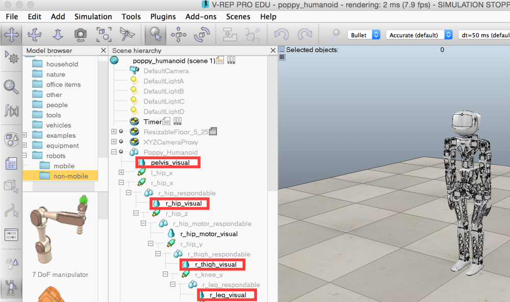

Using V-rep to simulate a Poppy Humanoid robot¶
Introducing V-rep¶
V-rep is a physical simulator that allows you to simulate robots in an enviroment with gravity, contacts and friction.
It is compatible with Windows, Mac and linux and can be installed from here. Or here.
It is free to use if you are from the education world and you can get a limited version otherwise.
Warning: a physical simulation always asks for quite a lot of computation, so try to run it on a not-too-old computer.
Start a simulation with Poppy Humanoid¶
Once you have V-rep and poppy-humanoid installed on your computer (see here for installing poppy-humanoid and therefore pypot on your desktop computer), you need to follow these two steps:
Start V-rep¶
On Windows, find the .exe file and execute it. On linux and mac, open a terminal, go to the folder where v-rep is install and launch it with:
./vrep.sh
You get a window that looks like this:

You should get an empty world with a floor and a tree structure of the elements of the world on the right.
You can explore the world by drag-and-dropping the simulated world and you can start/pause/stop the simulation with the up-right corresponding buttons. As v-rep uses a lots a computing power, it is advised to pause the simulation while your robot don’t move.
Launch a scene containing a Poppy Humanoid robot¶
The 3D model for the Poppy Humanoid robot is included in the poppy-humanoid package.
So, all you have to do is open a Python console or start a Python file and start it with:
from poppy_humanoid import PoppyHumanoid
poppy = PoppyHumanoid(simulator='vrep')
You should see a Poppy Humanoid appear in the middle of the scene in the V-rep window:

The poppy object that we just created can now be used exactly as a PoppyHumanoid object created for a physical robot.
For example, you can test it with:
# print all motors
print poppy.motors
#ask a new position for the head
poppy.head_z.goal_position = -10
#wait a bit
import time
time.sleep(2.)
#print head_z position
print poppy.head_z.present_position
If the simulated Poppy Humanoid turns its head, well done, it works! Now you can follow this tutorial to learn how to control it!
You may want at some point to go back to the initial state of the simulation. Here is the command:
poppy.reset_simulation()
Troubleshooting and advanced usage¶
See here for a view on lower-level link between your robot and V-rep.
TODO
- what if it doesn’t connect ?
- what if it freezes ?
- how to create a scene with objects ?
- how to add another creature ?
Usage example: determine reachable space for the arm¶
Using a V-REP simulated robot, you can easily retrieve an object position and orientation. You just need to know its name in the vrep scene.
Note: at the moment to know the name of object in the vrep scene, you have to look for them in the v-rep window. Hopefully in future version of pypot, you will be able to directly retrieve them.
{kind=link}
For instance, to get the 3D position of the left hand, you just have to do:
poppy.get_object_position('l_forearm_visual')
You get a list of 3 positions in the V-REP scene referential (the zero is somewhere between Poppy Humanoid’s feet). You can use any object as referential and thus get the left forearm position related to the head for instance:
poppy.get_object_position('l_forearm_visual', 'head_visual')
To discover the reachable space of the left hand of the robot (with respect to its head), you can for example generate many random positions for the arm (here, 25) and store the reached positions:
import random
reached_positions = [] #we will store the positions here
for _ in range(25):
poppy.reset_simulation()
# Generate a position by setting random position (within the angle limit) to each joint
pos = {m.name: random.randint(min(m.angle_limit), max(m.angle_limit)) for m in poppy.l_arm}
print "Getting forearm position when motors ar at ",pos
#make the robot reach position
poppy.goto_position(pos, 2., wait=True)
#get and store forearm position
reached_pt.append(poppy.get_object_position('l_forearm_visual'))
Now matplotlib or any other plot library can help you visualize the data:
from mpl_toolkits.mplot3d import Axes3D
ax = axes(projection='3d')
ax.scatter(*array(reached_pt).T)

TODO: can someone confirm that code and imports are OK ?